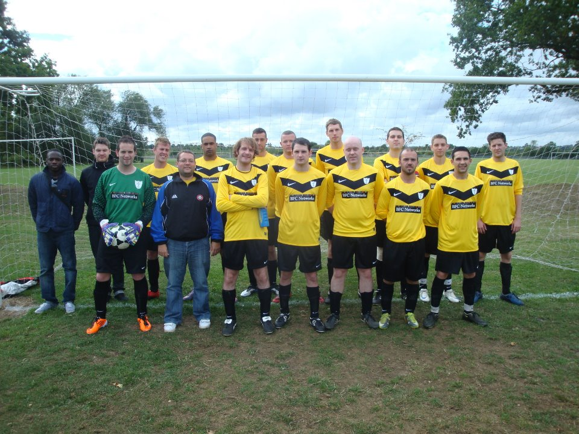

About

A life outside coding
Outside of coding, I have many interests and hobbies that I enjoy and keep me busy. My main passion in life is music, and to that end I have been playing in bands in and around Birmingham for over a decade. Primarily I play guitar but I can also play brass instruments and have been known to sing from time to time too!
As well as performing, I also write music and lyrics, whether that be for the bands I play with or for my own personal projects. Since 2015 I have been playing as a lead guitarist for Shaun Gambowl Walsh & The Plagiarists. We're very active in putting out all sorts of content beyond purely music, and I currently maintain and run a Twitch and YouTube channel for us, so I'm always busy doing creative things even when I'm not up to my neck in code!

In 2019 we were lucky enough to share a stage with genuine musical royalty in Doves, Johnny Marr, The Coral, and fellow local lads The Twang for a 1-day festival held at Perry Park in Birmingham (Inner City Live). It was a great experience and hopefully not the last time I get to be part of such a huge event with world-class performers and artists.
If you're interested in finding out more about the music I'm making, you can search for us on all the usual streaming services (and maybe also check out my previous bands Silvershores and The Lucky 27s whilst you're at it!), and all the links to our content and various media channels can be found on the links page, so be sure to check them out!
Beyond my music, I also enjoy sports (especially football) and was a keen amateur footballer, having played 11-a-side competitively since the age of 7 for various sides at various levels. Unfortunately, age has caught up with me and since 2019 I've been forced to hang up my boots, apart from the odd kick about or 5-a-side match with mates.
Some of my broader interests include going to gigs, music festivals, indie/alternative music club nights, travelling, video games, movies, reading (though I don't get round to it anywhere near as much as I'd like), collecting vinyl, science, politics and generally soaking up as much culture and knowledge as I can!